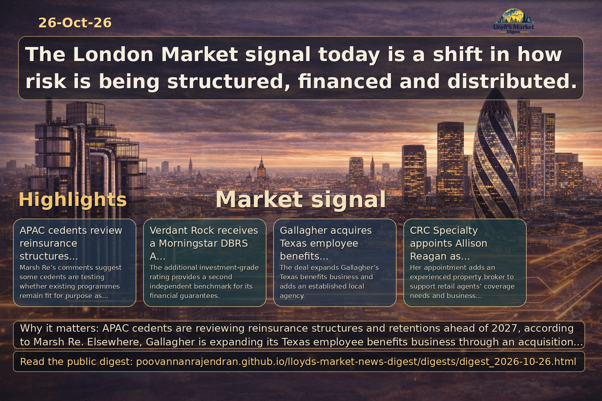

Executive summary
APAC cedents are reviewing reinsurance structures and retentions ahead of 2027, according to Marsh Re. Elsewhere, Gallagher is expanding its Texas employee benefits business through an acquisition, CRC Specialty has appointed a property broker, and Verdant Rock has secured a Morningstar DBRS investment-grade rating alongside its Fitch rating. These developments point to continued activity across reinsurance, specialty distribution and insurance-linked finance.
View LinkedIn Visual Summary

Generated from the same day's LinkedIn digest text.
Key themes
- AI and insurance operations
- BPO contract renegotiation
- Vendor accountability
- No directly relevant Lloyd’s or specialty-insurance reporting in the supplied material.
- The UK Budget excerpt gives headline fiscal measures but no reported insurance-market impact.
- APAC cedents are considering holistic reinsurance solutions and reviewing programme structures and retentions.
Source: insurancetimes.co.uk
Why it matters: Changing buyer expectations around AI-enabled efficiency could affect insurers’ outsourced operating models and vendor relationships, although the excerpt does not specify Lloyd’s or specialty-market impacts.
- The report says 86% of insurance buyers of outsourced operations would renegotiate for AI efficiency or completely rework contract terms and service levels.
- mea Platform chief executive Martin Henley says insurers are hardening negotiations and pressing existing vendors to demonstrate transformation.
- Traditional long-term BPO models could become short-lived; the excerpt does not provide further detail on the research or specific operational outcomes.
Source: reinsurancene.ws
Why it matters: The additional rating provides a second independent investment-grade benchmark for Verdant Rock’s financial guarantees.
- Morningstar DBRS assigned Verdant Rock an A (low) Financial Strength Rating and an A (low) Issuer Rating.
- The ratings complement Fitch’s BBB+ Long-Term Insurer Financial Strength Rating with a Stable Outlook, assigned on June 12, 2026.
- Morningstar DBRS cited projected earnings ability, risk profile, liquidity and capitalization; the excerpt does not provide further details on the rating’s intended use.
Source: reinsurancene.ws
Why it matters: The acquisition expands Gallagher’s employee benefits business in Texas and adds an established local agency.
- Gallagher acquired Mund Group, Ltd., a Texas-based agency focused on employee benefits and health and welfare consulting.
- Financial terms were not disclosed.
- Jeff Mund, Brandon Mund and the wider team will remain at their existing location and report to Leah Vetter, who leads employee benefits consulting.
Source: reinsurancene.ws
Why it matters: The comments indicate that some APAC cedents are assessing whether existing reinsurance structures meet their needs as they prepare for 2027.
- Marsh Re’s Tony Gallagher said clients are seeking holistic solutions beyond pure volatility cover, with an emphasis on partnerships and shareholder returns.
- The discussions included programme structure, retention and whether programmes are fit for purpose for 2027.
- The excerpt links the client context to catastrophe frequency and secondary perils but provides no specific market-wide pricing or capacity data.
Source: reinsurancene.ws
Why it matters: CRC Specialty’s appointment adds experienced commercial property brokerage capacity to its wholesale specialty operation.
- Allison Reagan joined CRC Specialty as Senior Vice President, Property Broker.
- She will support retail agents with property coverage needs and business development.
- Reagan brings more than 12 years of insurance brokerage experience and joins from another wholesaler; further details about her previous employer were not provided.